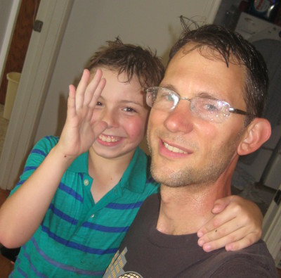
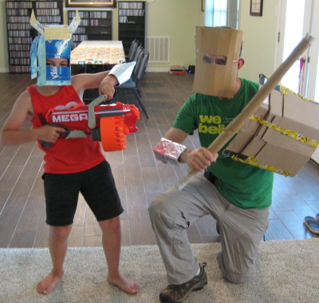
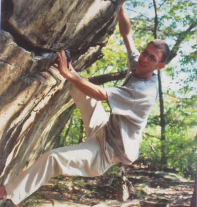
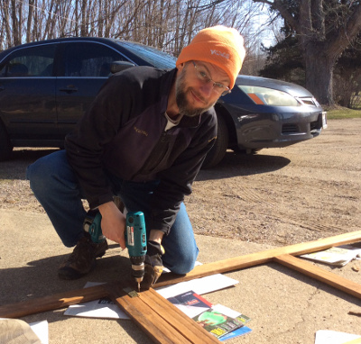
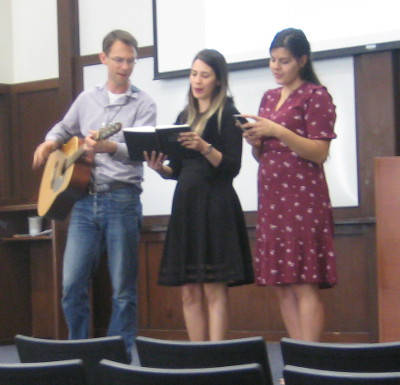
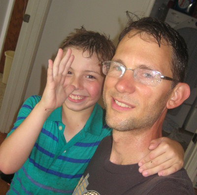
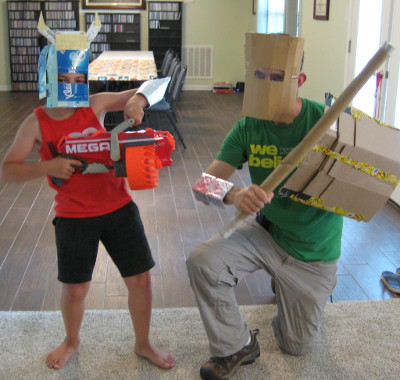
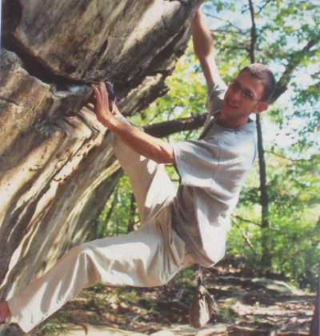
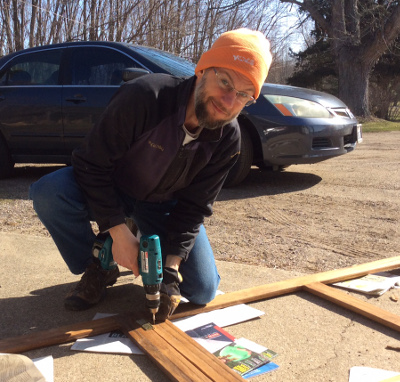
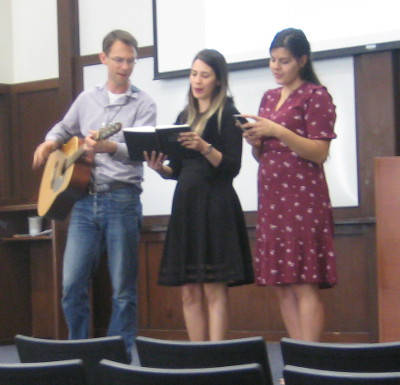

About
 
I've always been a curious. Learning about the world's people and complexities.
Science
People
Reading
Hobbies
Science
Physics
Biology
Astronomy
Statistics
Economics
Psychology
People
Enjoying and understanding people: life's reward and challenge.
Teaching those who want to learn is one of life' most rewarding endeavers. I've taught and enjoyed teaching high school, community college, and university-level physics. As I learn something, I try to improve upon the instruction I've received.
I enjoy learning from people I meet.
Games are a great way to learn more about friends.
I often find myself as social coordinator.
If you are not actively involved leading in your local church, you are missing out.
Hobbies
Sports: running, rock climbing, volleyball, triathlon, whatever my friends are doing
Cooking: curry, stir-fry, cowboy caviar, . . .
Hiking: Great Smokey Mountain National Park
Games: group, table, strategy
Woodworking
Children
Writing
Traveling
Languages: %50 Spanish, 0.01% Swahili, Arabic 0%
Music
My parents gave me piano lessons as a child, and I picked up the instrument during my year abroad as high school teacher in the island of Yap, Micronesia.
At summer camp, where I spent ten summers working, I learned to play the guitar by ear. I took trombone lessons in high school, and enjoyed playing in the school band.
The difference in sight reading and playing music by ear was striking; they use opposite sides of the brain. I took the first music theory with the hope of reconciling these differences, and I was pleased to learn solfage (sight-singin), figured bass, and functional notation which helped me annotate sheet music in a key-independent way.
One day, as I was visiting our departmental secretary, I noticed a mystical looking blue-glazed, hollow, potato-lookin instrument sitting on his desk. When I asked him what this enchanting object was, he told me it was an ocarina from Zelda. After tooting a few notes, I fell in love and ordered my own ocarina and taught myself to play.
Finally, I enjoy singing:
congregational singing at church,
leading song service with a guitar, or
joining a choir or ensemble.